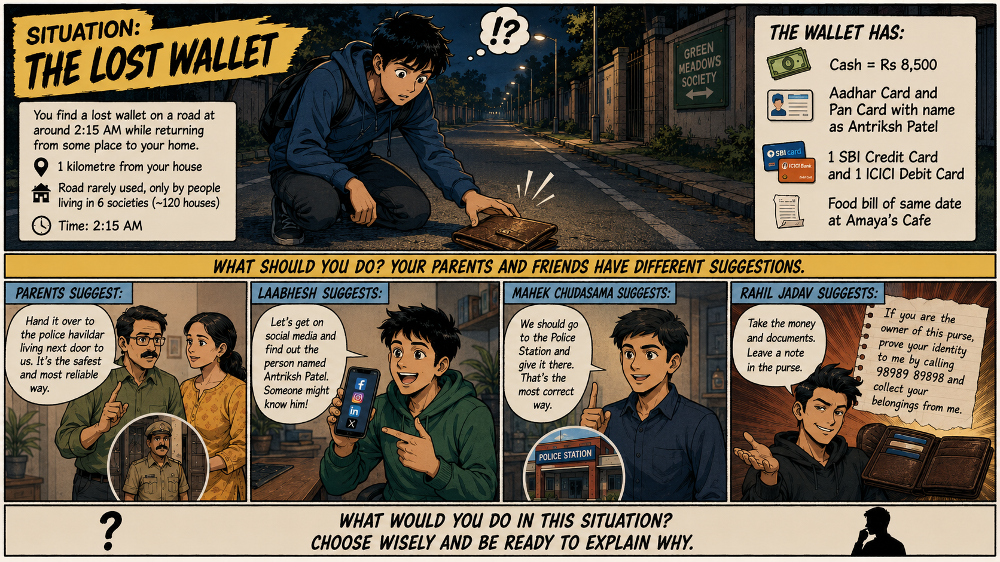

We will be working upon "How to Think?" in the upcoming few lessons. Please read the following content and based on the content, give answers to a few of the questions given below.
Situation: The Lost Wallet

Situation: The Lost Wallet / Purse Scenario
It was around 2:15 AM on a quiet, dimly lit stretch of road just a kilometer away from my house when something on the pavement caught my eye. The road was rarely frequented by outsiders, mostly serving a tight-knit community of about six housing societies comprising roughly 120 houses. Crouching down, I picked up a lost wallet and flipped it open under the streetlamp to check for any identity proof.
₹8,500 Cash
Aadhaar Card (Antriksh Patel)
PAN Card
SBI Credit Card
ICICI Debit Card
Amaya's Cafe Receipt
Unsure of the best way to return it, I sought advice, only to be met with a chaotic split of opinions:
Parents' Suggestion: Logically suggested handing it straight over to the police havildar who lives right next door to us.
Laabhesh's Idea: Insisted the fastest route would be searching for Antriksh Patel on social media to send him a direct message.
Mahek's Idea: Playing it completely by the book, urged me to take it directly to the local police station to file an official report.
Rahil's Scheme: Elaborate scheme to pull out cash and documents, but leave the empty purse on the road with a written note: "If you are the owner of this purse, prove your identity to me by calling 98989 89898 and collect your belongings from me."
Standing there in the middle of the night with the wallet in my hand, I had to figure out which path was actually the right one to take.
Questions for Self-Reflection
Okay, let us answer a few questions. It is recommended to take up a book and answer the below questions before reading the next section.
1.
What does your instinct say in this situation, what is appropriate course of action?
2.
Are your parent's suggestions not valid? After all, you personally know the police havildar as he is your neighbour for so many years.
3.
What are your thoughts about Laabhesh's idea? The road is lesser travelled, and high chances you might find "Antriksh Patel" on social media who lives in those 6 societies.
4.
Submitting the purse in a police station is one of the most obvious responses in such case. But, should you get into police station and all? Are you with Mahek's idea?
5.
Rahil's idea is a creative idea. What about this? Definitely the person who has lost it will for sure try to find it, and it will be easy to verify if the person is genuine or not by simply asking their Aadhar Number, PAN Number and what food he ate on that day.
Quick Notes / Your Thoughts (Auto-saved)
Auto-saved locally
Action Required: Hopefully, you have answered all of them on your own and written somewhere. Please do it before reading the next section.